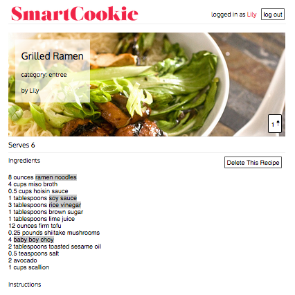
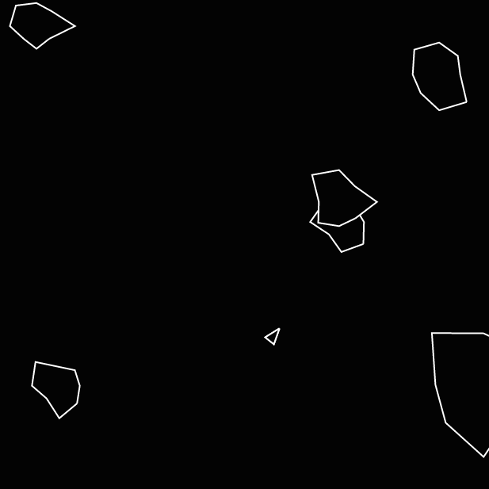
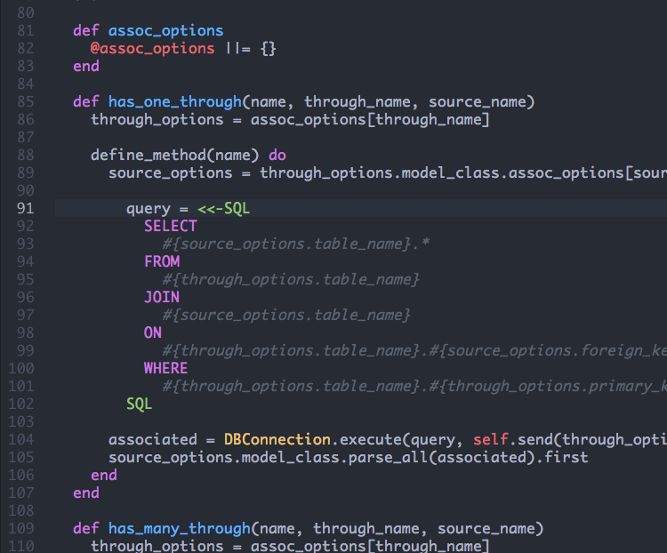

SOME THINGS I'VE MADE
-
SmartCookie (Rails, Backbone.js, jQuery)
A collaborative recipe development platform with annotations inspired by Genius.
Rails serves up a RESTful JSON API to a Backbone front end.
Gets start and end indices for annotations by reading DOM's selection object.
Supports nested and overlapping annotations. -
Asteroids (Javascript, HTML5 Canvas, jQuery)
Browser game inspired by the arcade classic
Randomly generates irregular polygonal asteroid geometry.
Uses trigonometry and transformational geometry to approximate physics and render objects. -
ActiveRecord Lite (Ruby)
Ruby ORM inspired by the Rails ActiveRecord Library
Generates SQL queries based on naming conventions to replicate Rails associations.
Utilizes advanced Ruby language features, such as meta-programming and reflection. -
Java Compiler (Java)

Compiler for a subset of the Java Programming Language
Optimizations include common subexpression elimination and polymorphic inline caching.
Supported language features include inheritance and interfaces. -
Ray Tracer with Photon Mapping (C++)

Ray Tracer
Photon mapping -> caustics.
Cool.